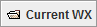

Below the main menus is the Main Toolbar of the Main Display window.
Many of the more commonly used features of McIDAS-V can be accessed here. Hold your mouse over a toolbar button to get a popup tip on what that button does. The main toolbar is user configurable. Right-click on the toolbar to change the icon sizes and select "Customize..." to open the User Preferences' Toolbar Options tab where you can add, remove, and change the position of the buttons in the toolbar.
The  button contains a variety of system bundles to demonstrate various functionalities of McIDAS-V. This button appears on the Main Toolbar by default, and can be removed through either the General tab of the User Preferences or through the Local Favorite Bundles Manager. Clicking on this button opens a dropdown with several sample real-time bundles:
Along with the Current WX real-time bundles, there are also a variety of archive bundles that can be added to the Main Toolbar through the Plugin Manager. Under the Sample Bundles tree in the Plugin Manager, there are five separate plugins for bundles that demonstrate many of the same features as the real-time bundles. Once these plugins are added and McIDAS-V is restarted, a toolbar button called Archive WX will be added to the toolbar. This button behaves similarly to the Current WX button, where clicking Archive WX opens a dropdown containing any of the sample bundle plugins that were added. Once these Archive WX bundles are added, they can be removed only through the Plugin Manager.
The Main Toolbar can be undocked from the Main Display window by left-clicking and dragging the textured area on the left side of the toolbar. This will place the Main Toolbar in its own window. To dock the toolbar back into the Main Display window, click the 'x' in the toolbar's window.